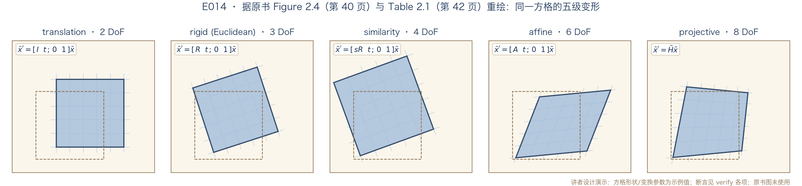

正课 · 06 · 第 2 章 图像形成
二维变换的族谱
欧氏、相似、仿射、射影一家亲 · §2.1.1 2D transformations
四段：① 五级变换逐个过 ② 族谱表与嵌套群 ③ 线怎么跟着变 ④ 三个附加变换与数值实验
导览 · 2D TRANSFORMATIONS
两张预告，今天兑现
E002 混过脸熟
齐次坐标那集预告过族谱：自由度 2→3→4→6→8今天对照原书表 2.1 正式逐层过（第 42 页）
E013 点了名
上一集片尾：下一集让这些对象动起来范围 §2.1.1（原书第 40–43 页）；§2.1.2 三维变换留待 E015 开场
讲者按：主菜不是背五种矩阵，是看清一条规则——矩阵越自由，保住的几何性质越少（讲者归纳）
第一级 · TRANSLATION
平移：2 个自由度
x′ = x + t —— 式(2.14)，原书第 40 页
x̄′ = [I t; 0 1] x̄ —— 式(2.15)：2×3 紧凑，补 [0ᵀ 1] 行成 3×3 全秩（可链乘、可求逆）
3×3 版本让「一连串变换」缩成一个矩阵乘法（式 2.15，原书第 40 页）——讲者按：代价只是多存一行
第二级 · RIGID / EUCLIDEAN
刚体（欧氏）变换：转起来
x′ = Rx + t —— 式(2.16)；R = [cosθ −sinθ; sinθ cosθ]，RRᵀ = I、|R| = 1 —— 式(2.17)
3 个自由度（θ, tₓ, t_y）；欧氏距离不变，故称 2D 欧氏变换（原书第 40 页）
学名叫 2D 刚体运动；机器人教程记作 SE(2)，「special」= 无反射（|R|=+1，脚注 1，原书第 42 页）；图像 y 轴朝下时正角视觉上顺时针——E002 作业的彩蛋（讲者按）
第三级 · SIMILARITY
相似变换：再给一个缩放
x′ = sRx + t = [a −b tₓ; b a t_y]x̄
不再要求 a²+b²=1 —— 式(2.18)，原书第 41 页
4 个自由度（s, θ, tₓ, t_y）；保线与线之间的夹角（讲者按：直观说，形状放大缩小不变形）
第四级 · AFFINE
仿射变换：六个数全放开
x′ = Ax̄，A 为任意 2×3 矩阵 —— 式(2.19)，原书第 41 页
6 个自由度；平行线仍平行、直线仍直线——角度与长度不再有保证（长度在相似级已放开）
第五级 · PROJECTIVE
射影变换：单应
x̃′ = H̃x̃，H̃ 任意 3×3，只差倍数算同一个
式(2.20)，原书第 41 页
x′ = (h₀₀x+h₀₁y+h₀₂)/(h₂₀x+h₂₁y+h₂₂) —— 式(2.21)：分母含 x、y，先除再落座
9 个数 − 1 个尺度 = 8 个自由度；保直线（直线变换后仍是直线）；别称透视变换或单应 homography（原书第 41 页）
重绘 · FIGURE 2.4
同一方格，五级变形

据原书 Figure 2.4（第 40 页）与 Table 2.1（第 42 页）重绘 · 原书图未使用 · 代码实跑输出
族谱 · TABLE 2.1
一页族谱，五级阶梯
变换
矩阵
DoF
保住什么（含下行各条）
平移
[I t]
2
定向 · 长度 · 角度 · 平行 · 直线
刚体（欧氏）
[R t]
3
长度 · 角度 · 平行 · 直线
相似
[sR t]
4
角度 · 平行 · 直线
仿射
[A]2×3
6
平行 · 直线
射影
H̃（3×3）
8
直线
表 2.1 原文要点：每一行也保住下面各行的性质——相似不只保角度，也保平行与直线（原书第 42 页）；「定向」＝朝向，即线段方向不变（讲者注解）；2×3 矩阵补 [0ᵀ 1] 行即成 3×3；更细的层级描述见 Hartley & Zisserman (2004)（原书第 41 页）
结构 · NESTED GROUPS
嵌套群：为什么是「族」
封闭
同族变换复合仍是同族：相似∘相似=相似closed under composition（原书第 41 页）
可逆
逆变换还在本族里：T⁻¹、(1/s)Rᵀ 型、H̃⁻¹inverse in the same group（原书第 41 页）
每个简单群都是下一级的子群（原书第 41 页）；2D 旋转/刚体的李群记号 SO(2)/SE(2) 有成套机器人教程（Dellaert & Kaess 2017 等，原书第 42 页）——深究再读；复合与逆在 §3.6 把这些变换施加到图像上时是刚需（原书第 41 页；讲者按：此处埋伏笔）
对偶 · CO-VECTORS
线怎么变：逆转置
l̃′ = H̃⁻ᵀ l̃ —— 式(2.22)，原书第 42 页
点用 H̃ 变，线的齐次向量要用「转置的逆」变——这样 l̃′·x̃′ = l̃·x̃ 才对每个点成立
讲者按：又是点线对偶——E013 里点线共用内积，这里点线各用一套矩阵，互为镜像（讲者归纳）；符号细节见 Jim Blinn (1998) 第 9–10 章（原书第 42 页）
附加 ① · STRETCH / SQUASH
拉扁压扁：改长宽比
x′ = sₓx + tₓ；y′ = s_y y + t_y —— 原书第 43 页
仿射的一种受限形式；原书：遗憾的是，它不能干净地嵌进表 2.1 的群链（第 43 页）
讲者按：它本身是仿射的子群，只是不在平移⊂刚体⊂相似这条链上——「不嵌套」说的是不落在这条链，不是不属于任何群（讲者归纳）
附加 ② · PLANAR SURFACE FLOW
平面流：八参数小运动
x′ = a₀+a₁x+a₂y+a₆x²+a₇xy；y′ = a₃+a₄x+a₅y+a₆xy+a₇y² —— 原书第 43 页
平面发生微小 3D 运动时的流动场——完整单应的小运动近似
最大卖点：对运动参数 aₖ 是线性的，而这些参数常是待估量（原书第 43 页）；非线性近似做线性化，估计里省事（讲者按）
附加 ③ · BILINEAR INTERPOLANT
双线性插值：四角定乾坤
x′ = a₀+a₁x+a₂y+a₆xy；y′ = a₃+a₄x+a₅y+a₇xy —— 原书第 43 页
由方形四角点的运动插值出整个形变（任意四个不共线点也行）
对参数线性，但一般不保直线——只有平行于方形两轴的线例外（原书第 43 页）；样条网格插值见 §9.2.2（讲者按：稀疏网格变形的常用件）
实验 · NUMERICAL CHECK
把族谱算一遍
18 项数值断言
逐级验证「保什么」+ 反例（仿射不保角、射影不保平行）+ 群闭合 + 逆在同族 + co-vector 恒等 + DoF 计数多数项配随机数、几项用固定特例
1 项同步检查
重绘输出图与幻灯片目录逐文件 md5 比对讲者设计实验（非原书内容）
讲者按：表中每级的主性质都有断言，另加结构、群与计数检验；说不保的，就造反例（讲者归纳）
实验结果 · CROSS CHECK
18+1 全过：族谱立得住
讲者设计实验 · 断言 18 项 + 同步 1 项全过（明细见代码 stdout）· 配图为重绘演示图（非断言输出）· 原书图未使用
归纳 · ONE SENTENCE
一句话带走：自由与承诺
讲者归纳：二维变换是一套「受限的 3×3 矩阵」——每往下一级，就少承诺一样几何性质：定向、长度、角度、平行，逐级让渡；直线是底线，连射影都保住。
讲者按：记忆锚——「8 = 9 − 1」：3×3 九个数，整体乘倍数不算数，射影 8 个自由度；表上「保住什么」那列从下往上读，就是「约束逐步收紧」（讲者归纳）
盘点 · VOCABULARY
本集新词，五个
单应
homography = 透视变换 = 射影变换式(2.20)，第 41 页
自由度
DoF：2 / 3 / 4 / 6 / 8 阶梯Table 2.1，第 42 页
SO(2) / SE(2)
特殊正交群 / 特殊欧氏群：2D 旋转与刚体第 42 页及脚注 1
余向量
co-vector：线用 H̃⁻ᵀ 变换式(2.22)，第 42 页
讲者归纳：单应、自由度、嵌套群、SO(2)/SE(2)、余向量——原书说三维那套族谱与二维非常相似（第 43 页），这些词下集继续用。
NEXT · 族谱到手
读原书§2.1.1（原书第 40–43 页），对照 Figure 2.4（第 40 页）与 Table 2.1（第 42 页）
作业E002 的 −30° 旋转接上平移与缩放：验证它仍是 [a −b; b a] 形式；再用三点共线叉积验证射影保直线
下一集E015 三维到二维：相机投影的代数（§2.1.2 3D 变换 + 针孔模型开场）